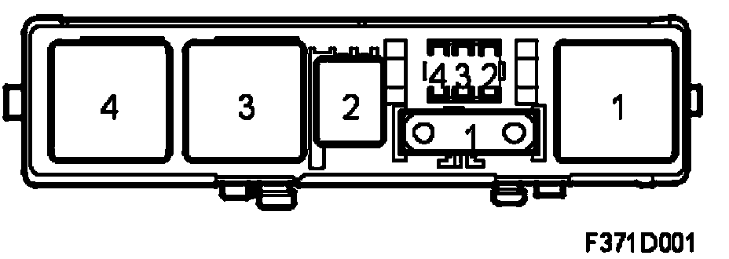
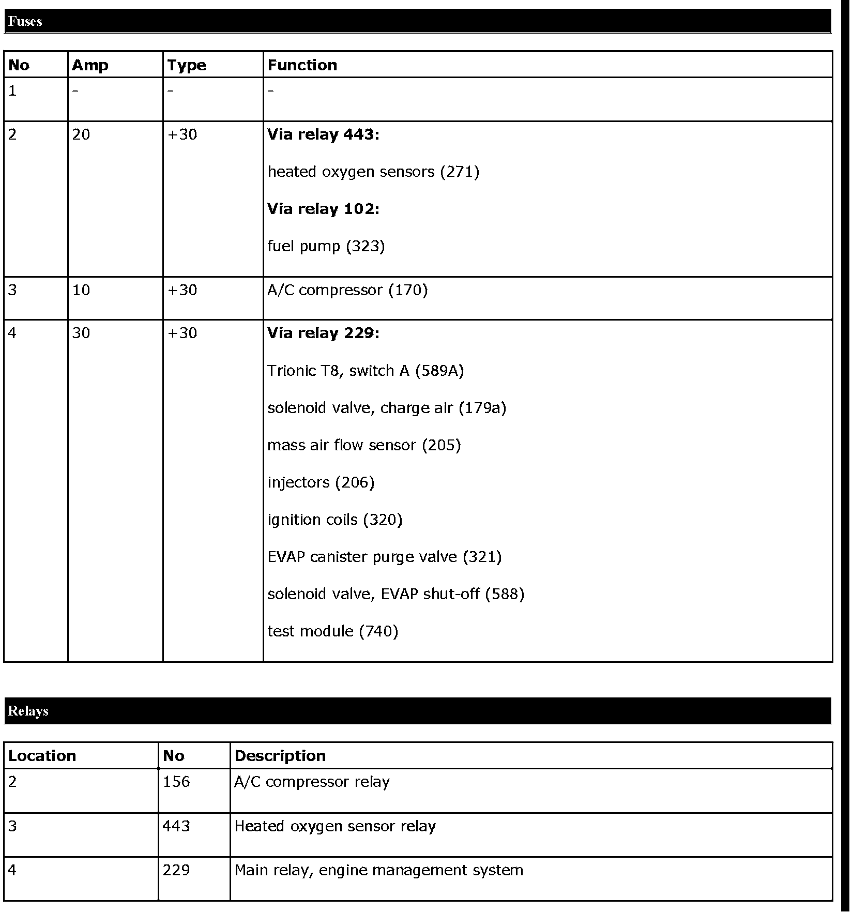

Main Fuse Box 727 In Engine Bay
Main fuse box 727 for B284, in engine bay
Location
The main fuse box is located in front of the battery
Main task
Act as the electrical centre for the engine management system T8 as well as the petrol pump relay 102, which is located in the compartment under the right A-pillar.
Type
Main fuse box with relays, maxi and micro fuses.
Connection
The main fuse box is integrated in the engine harness.
Power supply, main fuse box 727
Fuses
